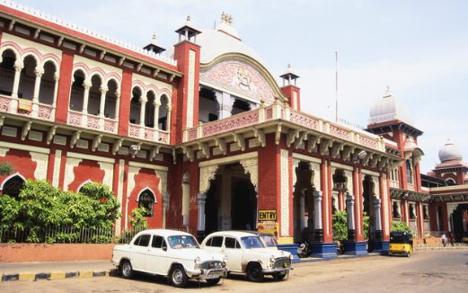

|

|
- Egmore, located in the heart of Chennai, is a bustling neighborhood rich in history and culture. Known for its architectural landmarks, it houses the iconic Egmore Railway Station, which is one of the oldest and busiest train hubs in Chennai, linking travelers from across the state and country. The station’s colonial architecture, marked by high arches and intricate detailing, reflects the British influence in the region. Egmore also boasts the Government Museum, one of India’s oldest museums, with its grand red buildings and vast collections that span from ancient art and archaeology to zoology. Walking through Egmore’s streets, one encounters a blend of modern development and historical charm.
- The Government Museum in Egmore is one of its most significant attractions, offering visitors a fascinating glimpse into the rich cultural heritage of India. Established in 1851, the museum holds an impressive array of artifacts, from rare bronze idols and ancient coins to traditional South Indian sculptures. Among its most remarkable exhibits is the Bronze Gallery, where visitors can view intricate Chola bronzes, representing the fine art of metal casting that thrived in South India centuries ago. The museum is also home to a children's museum and a large library, making it a popular destination for families, history enthusiasts, and researchers alike.
- Egmore is also a lively commercial and residential hub, surrounded by shopping complexes, eateries, and educational institutions. The area is famous for its mix of traditional South Indian and international cuisine, from local street food to upscale restaurants that attract food lovers from all over Chennai. Amidst the bustling streets, Egmore historical buildings and cultural centers provide a peaceful escape, balancing the vibrant atmosphere of the area with pockets of tranquility. With its unique combination of heritage and urban life, Egmore continues to be a cherished neighborhood, blending Chennai history with its present-day vigor.
|